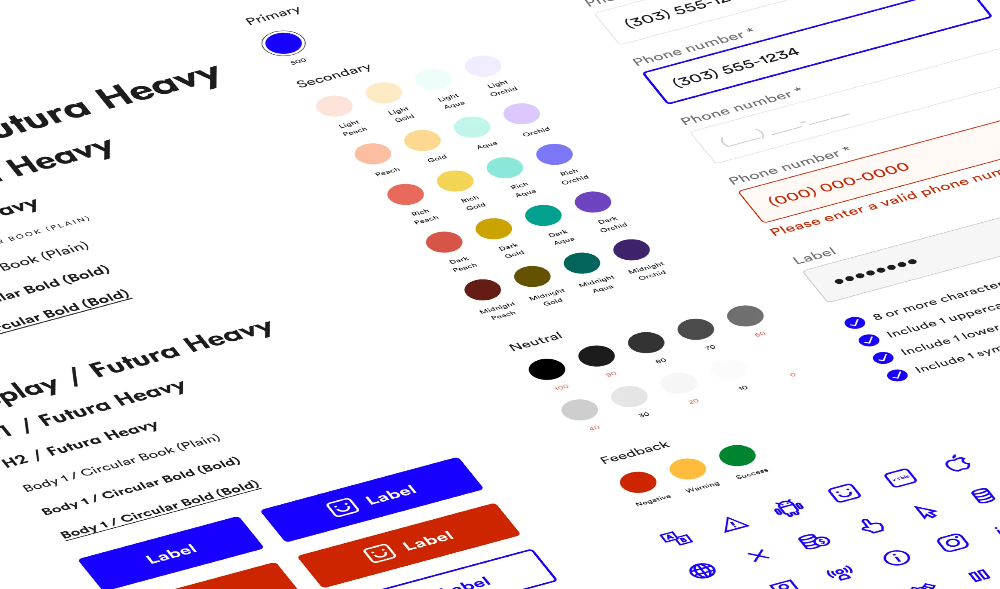
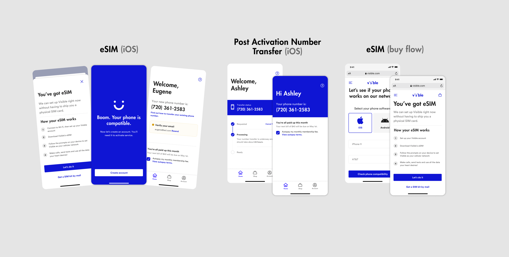

People and data
Combining primary research and Verizon’s vast cache of secondary research, I used storytelling with a blend of qualitative and quantitative data to surface potential opportunities.
We built something, and usability tests went well, but potential customers indicated otherwise in the market. Quantitative data showed fallout at critical points in the user journey as the business started adding new features and building on a broken experience.
As themes emerged to create a better user experience, aligning them to the business was critical. As a team, we started to align under some core metrics for our customers: zero-touch to activation, time to activate, and the quality of our gross adds.
Early mobile web HTML prototype created in Webflow
Early iOS prototype created in Principle
A measured improvement
With metrics in place, the products, features, and enhancements I worked on directly accelerated Visible’s growth trajectory, growing the member base from 0 to (a lot). Incremental growth in months (by 100k) decreased from 21 to 4 months.
An iterative approach to improving the core experience revealed that the customer experience was moving in the right direction and aligned with our core metrics. For the business, this translated to an NPS of 52, but as experience outcomes, we observed:
- A decrease in calls to Care
- The jury is still out on the quality of gross adds as the team continues to iterate on the experience and build off features like eSIM to improve real product-led growth
- A reduction in the time it took our members to activate the service, with activations trending up.
The beginning of a design system
After a series of early usability tests, we grouped common UI patterns into an emerging design system and defined some principles to follow. Keeping accessibility in mind as the design system grew, we established a way for designers to evolve the design system and a process for a design and engineering review before adding it to the component library.


Current Visible iOS App (Upper funnel)
Lessons learned
The telecommunications sector, specifically the wireless industry, is hard to change. There is constant tension to stay customer-focused and outcome-based on what to build and why.
Working with a strong brand and marketing team was great, but keeping Product, Brand, Marketing, and Product Marketing aligned continues to be challenging.
Delivering customer value while balancing business rules and industry regulation is particularly challenging.
I’m proud to be a part of multiple product-led initiatives that helped the company’s mission while creating customer value and bringing a simple way for people to stay connected in what is traditionally considered a saturated and mature category.
Next project